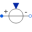
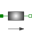

AIMC_ConveyorTest example: AsynchronousInductionMachineSquirrelCage with inverter driving a conveyor |
|
Diagram
{kind=link}
Information
This information is part of the Modelica Standard Library maintained by the Modelica Association.
An ideal frequency inverter is modeled by using a VfController and a three-phase SignalVoltage. Frequency is driven by a load cycle of acceleration, constant speed, deceleration and standstill. The mechanical load is a constant torque like a conveyor (with regularization around zero speed).
Simulate for 20 seconds and plot (versus time):
- currentQuasiRMSSensor.I: stator current RMS
- aimc.wMechanical: motor's speed
- aimc.tauElectrical: motor's torque
Default machine parameters are used.
Parameters (7)
| VNominal |
Value: 100 Type: Voltage (V) Description: Nominal RMS voltage per phase |
|---|---|
| fNominal |
Value: aimcData.fsNominal Type: Frequency (Hz) Description: Nominal frequency |
| wNominal |
Value: 2 * pi * fNominal / aimcData.p Type: AngularVelocity (rad/s) Description: Nominal speed |
| TLoad |
Value: 161.4 Type: Torque (N·m) Description: Nominal load torque |
| JLoad |
Value: 0.29 Type: Inertia (kg·m²) Description: Load's moment of inertia |
| r |
Value: 0.05 Type: Length (m) Description: Transmission radius |
| aimcData |
Value: Type: AIM_SquirrelCageData |
Components (13)
| aimc |
Type: AIM_SquirrelCage |
|
|---|---|---|
| currentQuasiRMSSensor |
Type: CurrentQuasiRMSSensor |
|
| dutyCycle |
Type: CombiTimeTable |
|
| vfController |
Type: VfController |
|
|  | signalVoltage |
Type: SignalVoltage |
| star |
Type: Star |
|
| ground |
Type: Ground |
|
| terminalBox |
Type: TerminalBox |
|
| aimcData |
Type: AIM_SquirrelCageData |
|
| gain |
Type: Gain |
|
| idealGearR2T |
Type: IdealGearR2T |
|
|  | mass |
Type: Mass |
| signForce |
Type: SignForce |